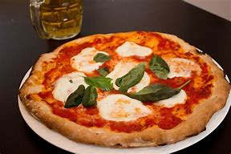

The recipe I have chosen is that of a Margherita pizza. I chose this recipe as pizza is one of my favorite foods to eat and I learned how to make it in Foods class. I really like pizza because I would go to Nat's Pizza alot in grades 5-7 which I still hold as the best pizza place. This recipe will tell you about my taste in food and you better like it as well or I'll be sad.

1. Place a pizza stone on a barbecue grate. Preheat the oven to 350°C for soft crust, and 450°C for crispy crust, setting the burners to high.
2. On a lightly floured surface, divide the dough into 4 pieces. Roll out 1 piece of dough at a time into a 9-inch (23 cm) disc. Place the disc on a sheet of parchment paper. Cover with tomatoes and cheese. Season with salt.
3. Place the pizza on the hot stone with the parchment paper. Close the lid and cook for 6 to 10 minutes, or until the crust is golden brown and the cheese has melted. Remove from the heat. Let rest 1 minute.
4. Garnish with fresh basil leaves. Season with pepper. Drizzle with olive oil. Repeat with the remaining pizzas.